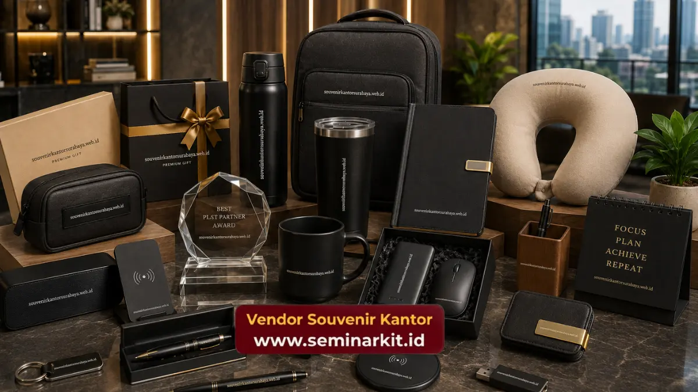

Souvenir kantor murah dan premium dibedakan dari bahan baku, daya tahan produk, dan kesan yang ditampilkan, dengan souvenir murah cocok untuk acara massal dan souvenir premium untuk momen formal bernilai tinggi.
- Souvenir kantor murah unggul dari sisi efisiensi anggaran untuk acara berskala besar.
- Souvenir kantor premium unggul dari sisi kesan eksklusif dan daya tahan jangka panjang.
- Pemilihan kategori sebaiknya disesuaikan dengan tujuan acara dan target penerima souvenir.
- Kombinasi keduanya sering digunakan dalam satu acara untuk efisiensi anggaran menyeluruh.
- Kualitas cetak logo tetap dapat dijaga baik pada kategori murah maupun premium.
Apa Perbedaan Utama Souvenir Kantor Murah dan Premium?
Perbedaan utama souvenir kantor murah dan premium terletak pada bahan baku, teknik produksi, serta daya tahan produk dalam jangka waktu penggunaan.
Souvenir kantor murah umumnya menggunakan bahan seperti plastik, akrilik tipis, atau kertas dengan proses produksi massal yang efisien.
Produk ini cocok digunakan sekali atau dalam jangka waktu pendek, misalnya sebagai merchandise acara seminar atau pelatihan.
Souvenir kantor premium menggunakan bahan yang lebih tahan lama seperti kulit asli, kayu solid, atau logam dengan finishing khusus.
Proses produksinya cenderung lebih detail, sehingga waktu pengerjaan per unit juga lebih lama dibandingkan kategori ekonomis.
Berdasarkan pengamatan pelaku industri produk promosi korporat pada 2025, produk souvenir kantor premium umumnya memiliki masa pakai lebih dari satu tahun, sementara sebagian besar souvenir kategori ekonomis digunakan dalam rentang waktu yang jauh lebih singkat.
Kapan Sebaiknya Memilih Souvenir Kantor Murah?
Souvenir kantor murah sebaiknya dipilih ketika kebutuhan acara melibatkan jumlah penerima yang sangat besar, seperti seminar nasional, pelatihan massal, atau pembagian merchandise ke seluruh karyawan.
Pada situasi seperti ini, efisiensi anggaran menjadi prioritas utama dibandingkan kesan eksklusif jangka panjang. Produk seperti pulpen custom, notes kecil, atau gantungan kunci akrilik dinilai cukup mewakili identitas brand tanpa membebani anggaran instansi secara signifikan.
Souvenir kantor murah juga cocok digunakan sebagai pelengkap goodie bag acara, sehingga tetap memberikan nilai tambah kepada peserta meski dengan biaya per unit yang terjangkau.

Kapan Sebaiknya Memilih Souvenir Kantor Premium?
Souvenir kantor premium sebaiknya dipilih untuk momen formal bernilai tinggi, seperti penghargaan karyawan berprestasi, cinderamata tamu VIP, atau gift eksklusif kepada mitra bisnis strategis.
Pada momen seperti ini, kesan eksklusif dan kualitas produk menjadi pertimbangan utama dibandingkan efisiensi anggaran semata.
Plakat penghargaan, tas eksekutif kulit, atau buku agenda premium mampu memperkuat citra profesional perusahaan di mata penerima souvenir.
Souvenir kantor premium juga lebih tepat digunakan sebagai representasi jangka panjang brand perusahaan, karena daya tahan produknya memungkinkan penerima menggunakan atau memajang produk tersebut dalam waktu yang lebih lama.
Apakah Kualitas Cetak Logo Berbeda pada Souvenir Murah dan Premium?
Kualitas cetak logo tetap dapat dijaga baik pada souvenir kantor murah maupun premium, selama teknik cetak yang digunakan sesuai dengan karakteristik bahan produk masing-masing.
Pada souvenir kantor murah, teknik sablon atau cetak digital umumnya sudah cukup menghasilkan logo yang jelas dan rapi untuk kebutuhan jangka pendek.
Sementara pada souvenir kantor premium, teknik engraving, emboss, atau bordir memberikan hasil cetak yang lebih tahan lama dan sesuai dengan kesan eksklusif yang ingin ditampilkan.
Konsultasi dengan vendor berpengalaman membantu memastikan teknik cetak logo yang dipilih sudah tepat sesuai bahan dan kategori harga souvenir kantor yang dipesan.
Bagaimana Cara Mengombinasikan Souvenir Murah dan Premium dalam Satu Acara?
Cara mengombinasikan souvenir kantor murah dan premium dalam satu acara adalah dengan membagi penerima berdasarkan tingkat kepentingan, misalnya souvenir premium untuk tamu VIP dan souvenir ekonomis untuk peserta umum.
Strategi ini umum digunakan pada acara berskala besar seperti seminar korporat atau perayaan ulang tahun perusahaan, di mana anggaran tetap dapat dikelola secara efisien tanpa mengurangi kesan penghormatan kepada tamu penting.
Perencanaan yang matang mengenai jumlah penerima pada masing-masing kategori sangat membantu menjaga anggaran tetap terkendali sekaligus memastikan setiap penerima mendapatkan souvenir yang sesuai dengan posisinya dalam acara.
Untuk membantu menyusun kombinasi souvenir kantor murah dan premium sesuai anggaran instansi Anda, tim vendorsouvenirkantor.web.id siap memberikan rekomendasi produk dan estimasi biaya secara detail.
Kesimpulan
Souvenir kantor murah dan premium memiliki peran yang berbeda tergantung tujuan dan target penerima. Souvenir murah efisien untuk acara berskala besar, sementara souvenir premium lebih tepat untuk momen formal bernilai tinggi. Kombinasi keduanya dalam satu acara juga bisa menjadi strategi anggaran yang efisien.
Segera diskusikan kebutuhan souvenir kantor perusahaan Anda, baik kategori murah maupun premium, melalui vendorsouvenirkantor.web.id untuk mendapatkan penawaran terbaik.

Banner promosi: klik gambar untuk langsung terhubung ke WhatsApp tim sales.